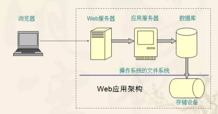

一、什么是缓存
1、Cache是高速缓冲存储器 一种特殊的存储器子系统，其中复制了频繁使用的数据以利于快速访问
2、凡是位于速度相差较大的两种硬件/软件之间的，用于协调两者数据传输速度差异的结构，均可称之为 Cache
二、缓存的分类
1、基于web应用的系统架构图

2、在系统架构的不同层级之间，为了加快访问速度，都可以存在缓存
操作系统磁盘缓存->减少磁盘机械操作
数据库缓存->减少文件系统I/O
应用程序缓存->减少对数据库的查询
Web服务器缓存->减少应用服务器请求
客户端浏览器缓存->减少对网站的访问
三、操作系统缓存
1、文件系统提供的Disk Cache：操作系统会把经常访问到的文件内容放入到内存当中，由文件系统来管理
2、当应用程序通过文件系统访问磁盘文件的时候，操作系统从Disk Cache当中读取文件内容，加速了文件读取速度
3、Disk Cache由操作系统来自动管理，一般不用人工干预，但应当保证物理内存充足，以便于操作系统可以使用尽量多的内存充当Disk Cache，加速文件读取速度
4、特殊的应用程序对文件系统Disk Cache有很高的要求，会绕开文件系统Disk Cache，直接访问磁盘分区，自己实现Disk
5、Cache策略
Oracle的raw device(裸设备) – 直接抛弃文件系统
MySQL的InnoDB： innodb_flush_method = O_DIRECT
四、数据库缓存
1、重要性
数据库通常是企业应用系统最核心的部分
数据库保存的数据量通常非常庞大
数据库查询操作通常很频繁，有时还很复杂
以上原因造成数据库查询会引起非常频繁的磁盘I/O读取操作，迫使CPU挂起等待，数据库性能极度低下
2、缓存策略
a、Query Cache
以SQL作为key值缓存查询结果集
一旦查询涉及的表记录被修改，缓存就会被自动删除
设置合适的Query Cache会极大提高数据库性能
Query Cache并非越大越好，过大的Qquery Cache会浪费内存。
MySQL: query_cache_size= 128M
b、Data Buffer
data buffer是数据库数据在内存中的容器
data buffer的命中率直接决定了数据库的性能
data buffer越大越好，多多益善
MySQL的InnoDB buffer：innodb_buffer_pool_size = 2G
MySQL建议buffer pool开大到服务器物理内存60-80%
五、应用程序缓存
1、对象缓存
由O/R Mapping框架例如Hibernate提供，透明性访问，细颗粒度缓存数据库查询结果，无需业务代码显式编程，是最省事的缓存策略
当软件结构按照O/R Mapping框架的要求进行针对性设计，使用对象缓存将会极大降低Web系统对于数据库的访问请求
良好的设计数据库结构和利用对象缓存，能够提供极高的性能，对象缓存适合OLTP（联机事务处理）应用
2、查询缓存
对数据库查询结果集进行缓存，类似数据库的Query Cache
适用于一些耗时，但是时效性要求比较低的场景。查询缓存和对象缓存适用的场景不一样，是互为补充的
当查询结果集涉及的表记录被修改以后，需要注意清理缓存
3、页面缓存
a、作用
针对页面的缓存技术不但可以减轻数据库服务器压力，还可以减轻应用服务器压力
好的页面缓存可以极大提高页面渲染速度
页面缓存的难点在于如何清理过期的缓存
b、分类
I、动态页面静态化
利用模板技术将访问过一次的动态页面生成静态html，同时修改页面链接，下一次请求直接访问静态链接页面
动态页面静态化技术的广泛应用于互联网CMS/新闻类Web应用，但也有BBS应用使用该技术，例如Discuz!
无法进行权限验证，无法显示个性化信息
可以使用AJAX请求弥补动态页面静态化的某些缺点
II、Servlet缓存
针对URL访问返回的页面结果进行缓存，适用于粗粒度的页面缓存，例如新闻发布
可以进行权限的检查
OScache提供了简单的Servlet缓存(通过web.xml中的配置)
也可以自己编程实现Servlet缓存
III、页面内部缓存
针对动态页面的局部片断内容进行缓存，适用于一些个性化但不经常更新的页面(例如博客)
OSCache提供了简单的页面缓存
可以自行扩展JSP Tag实现页面局部缓存
六、web服务器端缓存
基于代理服务器模式的Web服务器端缓存，如squid/nginx
Web服务器缓存技术被用来实现CDN（内容分发网络 content delivery
network）
被国内主流门户网站大量采用
不需要编程，但仅限于新闻发布类网站，页面实时性要求不高
七、基于ajax的浏览器缓存
使用AJAX调用的时候，将数据库在浏览器端缓存
只要不离开当前页面，不刷新当前页面，就可以直接读取缓存数据
只适用于使用AJAX技术的页面